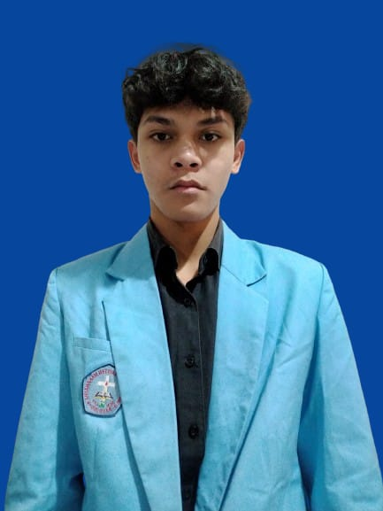
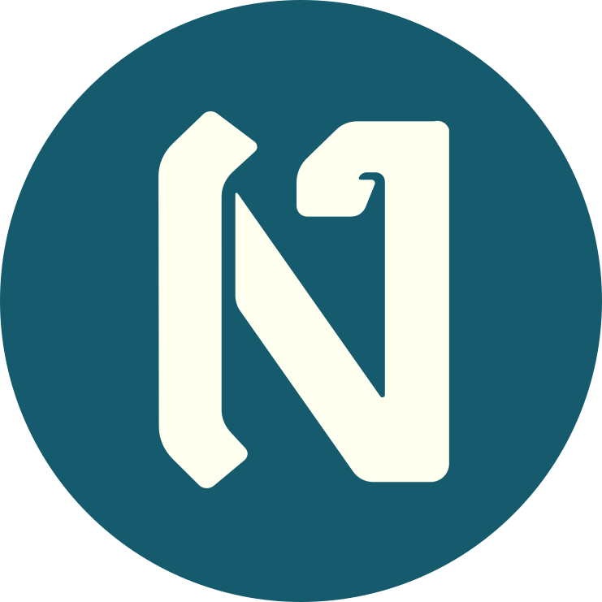
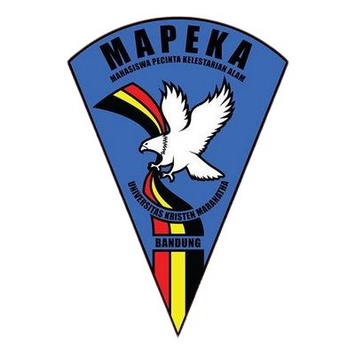
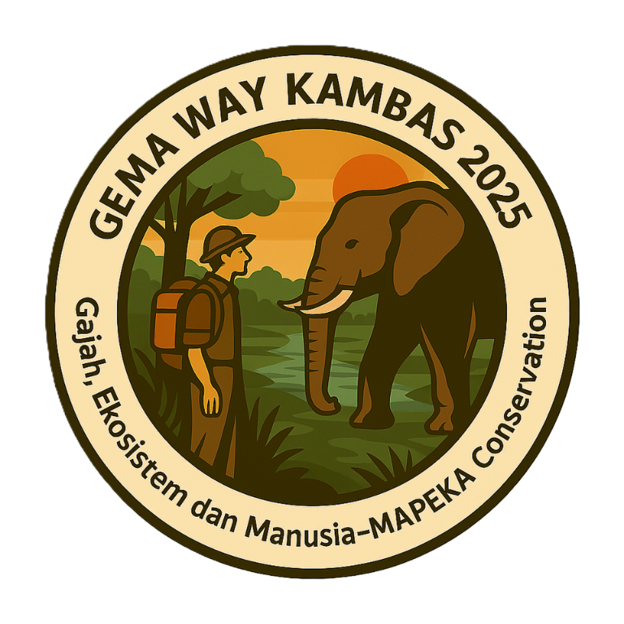

Menjaga komunikasi
Mengatur FAQ dan balasan cepat supaya pelanggan mendapat jawaban yang jelas tanpa harus menunggu lama.
Mahasiswa Sistem Informasi · Bandung
Saya Kevin, mahasiswa Sistem Informasi di Maranatha. Saya suka mencari tahu bagaimana sesuatu bekerja, lalu ikut mengerjakannya—entah itu konten, layanan pelanggan, atau kegiatan di lapangan.

Konten yang punya tujuan.
Layanan yang responsif.
Rencana yang siap dijalankan.
Saya lebih suka belajar sambil mengerjakan sesuatu.
Di Nuhiji, saya membuat kalender konten dan moodboard. Di Didi Petshop, saya belajar membaca insight dan mengatur balasan pelanggan. Di luar pekerjaan, saya ikut merencanakan kegiatan sebagai Ketua Operasi MAPEKA. Tempatnya berbeda, tapi saya selalu tertarik pada satu hal: bagaimana membuat rencana berjalan dengan baik.
Tiga hal yang paling sering saya temui dan ingin terus saya dalami.
Mengatur FAQ dan balasan cepat supaya pelanggan mendapat jawaban yang jelas tanpa harus menunggu lama.
Membuat kalender, menjaga arahan visual, dan menyampaikan informasi yang memang dicari audiens.
Melihat reach, engagement, dan conversion untuk memahami apa yang bekerja dan apa yang perlu dicoba lagi.
Pengalaman saya belum panjang, tapi setiap tempat kerja mengajarkan hal yang berbeda.
PENGALAMAN PROFESIONAL
Customer Relationship Management Specialist
Di sini saya mengelola konten Instagram tentang perawatan hewan dan katalog produk. Saya juga mengecek reach, engagement, dan conversion untuk mengevaluasi konten serta CTA, sambil menyiapkan FAQ dan Instant Replies di Meta Business Suite.
PENGALAMAN PROFESIONAL

Customer Relationship Management Specialist (Intern)
Saya menyusun kalender konten bulanan dan moodboard bertema Coppencore agar tampilan Instagram tetap konsisten. Dari Instagram Insights, saya belajar membaca performa konten dan menyusun strategi dengan AIDA serta marketing funnel.
PENGALAMAN PROFESIONAL
Staf Operasional & Kasir
Pengalaman pertama saya di operasional sehari-hari: melayani pesanan, memproses pembayaran lewat POS, menutup laporan kasir, dan memastikan bahan baku serta area dapur tetap siap digunakan.
Dari Way Kambas sampai kegiatan bersih-bersih, pengalaman organisasi mengajarkan saya bekerja bersama orang dengan latar yang berbeda.

KEPEMIMPINAN

KONSERVASI & RISET
AKSI LINGKUNGAN
WEBFASTLAB.ID
Di luar kuliah dan kegiatan organisasi, saya sedang membangun Webfastlab—tempat saya membantu mewujudkan kebutuhan digital.
Untuk kebutuhan pribadi, usaha, atau ide yang ingin dibawa ke ranah digital.
Konsultasi proses dan bantuan teknis; topik, analisis, dan karya akhir tetap menjadi milik penulis.
Punya ide website, ingin ngobrol soal pendampingan teknis, atau sekadar mau bertukar cerita? Tinggalkan pesan—saya akan membalas lewat email.